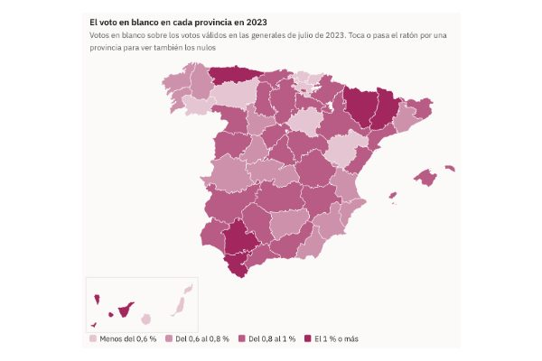

Actualidad · Camino al 29N · España
Encuestas Andorra 29N: qué son las encuestas prohibidas y qué dice la ley
Son encuestas publicadas fuera de España durante la veda, que va del martes 24 hasta que cierren los colegios el domingo 29. En 2023, «encuestas andorra» solo se buscó la semana de la veda, con el máximo en la jornada de reflexión.
Por Nacho G. del Álamo · · Actualizado el
Cada párrafo lleva una etiqueta: dato (cifra comprobable con las fuentes), patrón (relación que se repite, sin afirmar la causa), hipótesis (explicación posible, sin dos fuentes independientes) o contexto (hechos y declaraciones publicados por otros, enlazados). Cómo verificamos
ContextoLas «encuestas de Andorra» son encuestas de las elecciones españolas publicadas por medios de fuera de España durante la veda, los cinco días antes de votar en los que la ley lo prohíbe aquí. Las más conocidas son las de El Periòdic d'Andorra (en castellano, El Periódico de Andorra), que publicó sondeos así en varias elecciones. Para el 29N, la veda empieza el martes 24 de noviembre y dura hasta que cierren los colegios el domingo 29. En mapaelectoral.es no publicamos ninguna encuesta durante la veda, tampoco las de fuera, ni enlazamos a ellas. El domingo, a las 20.00, cuando cierren los colegios de la Península, daremos el sondeo a pie de urna de las televisiones, citando quién lo hace, y desde las 21.00, los resultados de las elecciones generales 2026.
Qué dice la ley
Dato«Durante los cinco días anteriores al de la votación queda prohibida la publicación y difusión o reproducción de sondeos electorales por cualquier medio de comunicación» (artículo 69.7 de la LOREG). Las infracciones en materia de encuestas se castigan con multa «de 3.000 a 30.000 de euros» (artículo 153), y el artículo 145 castiga como delito, con «prisión de tres meses a un año», a «quienes infrinjan la normativa vigente en materia de encuestas electorales». La ley prohíbe publicarlas, difundirlas y reproducirlas; no prohíbe hacerlas, y los partidos siguen encargando las suyas. Cómo se aplica al 29N, día a día, en la pieza sobre la veda de encuestas.
De Andorra a Australia
ContextoLa ley española no alcanza a los medios de otros países. El Periòdic d'Andorra publicó durante la veda una encuesta diaria del Gabinet d'Estudis Socials i Opinió Pública (GESOP) en las generales de 2008, en las catalanas de 2010, en las municipales de Barcelona de 2015 y en las generales de diciembre de 2015, según El Periódico, en un texto reproducido por Diario de León, y La Marea. En 2023, el destino fue Australia: GESOP cuenta que su sondeo del sábado 22 de julio se publicó «en el portal web australiano The Adelaide Review el mismo día de las elecciones» (GESOP). En las autonómicas catalanas de 2024 volvió a Andorra, con una encuesta diaria del Diari d'Andorra, según el Diari Més.
DatoAunque en 2023 la encuesta saliera en Australia, en España se siguió buscando «encuestas andorra». Según Google Trends, esa búsqueda no existió antes del martes 18 de julio, el primer día de veda. Fue creciendo cada día hasta su máximo el sábado 22, la jornada de reflexión, y desapareció el lunes después de las elecciones. Durante la veda se buscó unas 3,2 veces más que «encuestas prohibidas».
Ver la tabla
| Día | «encuestas andorra» | «encuestas prohibidas» |
|---|---|---|
| 10 de julio de 2023 | 0 | 0 |
| 11 de julio de 2023 | 0 | 0 |
| 12 de julio de 2023 | 0 | 0 |
| 13 de julio de 2023 | 0 | 0 |
| 14 de julio de 2023 | 0 | 0 |
| 15 de julio de 2023 | 0 | 0 |
| 16 de julio de 2023 | 0 | 0 |
| 17 de julio de 2023 | 0 | 0 |
| 18 de julio de 2023 | 26 | 10 |
| 19 de julio de 2023 | 56 | 9 |
| 20 de julio de 2023 | 61 | 23 |
| 21 de julio de 2023 | 90 | 29 |
| 22 de julio de 2023 | 100 | 33 |
| 23 de julio de 2023 | 38 | 0 |
| 24 de julio de 2023 | 0 | 0 |
| 25 de julio de 2023 | 0 | 0 |
Qué se ha publicado fuera esta semana
DatoActualización del 24 de noviembre, a las 18.45. Para el 29N, el portal australiano The Adelaide Review prevé publicar durante la veda «una actualización diaria» de estimaciones electorales «elaborada a partir de estudios de GESOP», según Estrella Digital. En mapaelectoral.es no las reproducimos ni las enlazamos; contaremos aquí cada día, hasta el sábado, qué se publica fuera, sin cifras. En Andorra, lo que cuenta el Diari d'Andorra es que el consulado de España en Andorra recibe «una mitjana d'uns 800 votants diaris, el doble de l'habitual», y que la previsión es doblar la participación de 2023. Las urnas del consulado están abiertas hasta el jueves 26.
DatoActualización del 24 de noviembre, a las 22.30. The Adelaide Review no es un medio cualquiera: es propiedad del editor barcelonés Javier Moll, según el diario australiano InDaily, que añade que El Periódico «is part of the stable of Prensa Ibérica, a publishing company owned by Moll». GESOP, la empresa de sus estimaciones, es la que hace las encuestas de El Periódico (GESOP). Prensa Ibérica compró El Periódico al Grupo Zeta en 2019, según Crónica Global.
DatoActualización del 25 de noviembre, a las 8.45. The Adelaide Review actualizará su sondeo «cada 24 horas, desde el martes 24 hasta el sábado 28, jornada de reflexión», con «entre 300 y 400» entrevistas telefónicas nuevas cada día «hasta llegar a las 3.000», según El Correo Gallego, que cita a La Nueva España. No enlazamos esas noticias porque enlazan al portal australiano.
DatoActualización del 26 de noviembre, a las 8.50. Las entregas van saliendo cada día. The Adelaide Review «ha difundido este martes la primera entrega», según Público, y «ha publicado este miércoles la segunda entrega», según El Español. Tampoco enlazamos estas noticias: aquí no difundimos ni reproducimos esa encuesta, ni lo que dice.
Las encuestas encubiertas
DatoLa Junta Electoral Central también ha actuado contra encuestas disfrazadas. En las autonómicas de Castilla y León de 2022, abrió expediente por los «Emojipanel» de Electomanía, publicados en la recta final con productos gastronómicos en lugar de partidos. La Junta escribió que «con estas prácticas se intenta eludir la prohibición» del artículo 69.7, según El Debate. Para la Junta, que no apareciera el nombre de los partidos no cambiaba nada, porque «quién viese esos paneles de manera sencilla podría asociar su resultado con la intención de voto de cada formación política».
ContextoLas encuestas publicadas hasta el lunes 23 siguen en la página de encuestas de las elecciones generales 2026, que no añade ninguna durante la veda. Desde las 21.00 del domingo, cuando cierren los últimos colegios, en Canarias, el mapa de las elecciones generales irá mostrando el recuento: a qué hora llegan los resultados.
Preguntas frecuentes
¿Qué son las encuestas de Andorra?
Encuestas de las elecciones españolas publicadas durante la veda por medios de fuera de España, a los que no alcanza la ley española. Las más conocidas son las de El Periòdic d'Andorra, que las publicó en varias elecciones desde 2008.
¿Cuándo empieza la veda de encuestas del 29N?
El martes 24 de noviembre. La ley prohíbe publicar, difundir o reproducir encuestas electorales en España los cinco días anteriores a la votación (artículo 69.7 de la LOREG), y el domingo tampoco se publican hasta que cierran los colegios. En mapaelectoral.es no publicamos ninguna durante la veda; el domingo, a las 20.00, daremos el sondeo a pie de urna de las televisiones.
¿Qué multa hay por publicar encuestas prohibidas?
De 3.000 a 30.000 euros (artículo 153). El artículo 145 castiga además como delito, con prisión de tres meses a un año, infringir la normativa de encuestas.
¿Se pueden hacer encuestas durante la veda?
Sí. Lo que la ley prohíbe es publicarlas, difundirlas o reproducirlas, no hacerlas.
Veda de encuestas del 29N · Encuestas elecciones generales 2026 · A qué hora salen los resultados
Método y fuentes
- Qué se compara
- Lo que dice la ley electoral sobre la publicación de encuestas en los cinco días antes de votar, los casos de encuestas publicadas fuera de España durante la veda desde 2008, la resolución de la Junta Electoral Central sobre encuestas encubiertas y las búsquedas en Google de «encuestas andorra» y «encuestas prohibidas» en la semana de las generales de 2023.
- Límites
- No incluye cifras de ninguna encuesta ni enlaces a encuestas publicadas durante la veda. Los casos de Andorra y Australia son los que han contado medios y empresas, no una lista completa. Google Trends da un índice relativo, no el número de búsquedas.
- Cómo se calcula
- Índice de Google Trends (0-100) de «encuestas andorra», «encuestas prohibidas» y «veda electoral» en la misma consulta, España, del 10 al 25 de julio de 2023 (datos/trends_encuestas_andorra_2023.csv); veces más: suma del índice de «encuestas andorra» del 18 al 22 de julio entre la de «encuestas prohibidas» en esos días. Script: encuestas_andorra_29n.py, en actualidad/src/resumenes. Cifras reproducibles con los scripts del expediente de la pieza. Metodología de Actualidad · Metodología del Atlas
- Fuentes
- BOE, Ley Orgánica 5/1985, del Régimen Electoral General (artículos 69, 145 y 153)
- Google Trends, búsquedas en España del 10 al 25 de julio de 2023
- Diario de León / El Periódico, la encuesta prohibida de las generales (20-12-2015)
- La Marea, las encuestas de Andorra (15-12-2015)
- GESOP, el sondeo del 23J (25-7-2023)
- Diari Més, el sondeo prohibido del Diari d'Andorra (7-5-2024)
- InDaily, The Adelaide Review y la ley electoral española (21-7-2023)
- Crónica Global, Prensa Ibérica compra El Periódico (19-4-2019)
- Estrella Digital, cinco días sin encuestas (24-11-2026)
- Diari d’Andorra, el voto en el consulado de España (24-11-2026)
- El Debate, la JEC y los sondeos encubiertos (1-4-2022)
- Autoría
- Nacho G. del Álamo
- Revisión de datos y texto
- Nacho G. del Álamo, 23 de noviembre de 2026
- Publicado · actualizado
- 23 de noviembre de 2026 · 26 de noviembre de 2026, a las 08.50
- Correcciones
- Ninguna.
Serie «Camino al 29N»: 156 piezas
- Feijóo hace campaña con UPN en Pamplona, donde el PSOE ganó 77 de las 151 secciones en 2023; con UPN y PP sumados, se habría quedado en 49
- Al PP le faltaron 9.793 votos en 2023 para recuperar un diputado en Gipuzkoa; Feijóo arropa hoy a su candidato, atacado en Hernani
- Si la abstención fuera un partido, en 2023 habría quedado por delante del ganador en más de la mitad de las grandes ciudades y en la mitad de las secciones de España
- Voto por correo para las elecciones generales del 29N: el plazo para pedirlo acaba el jueves 19; en 2023, una de cada tres solicitudes llegó en las dos últimas semanas
- Elecciones generales: una de cada tres secciones cambió de ganador entre 2019 y 2023
- Debate Sánchez Feijóo: hora, dónde verlo y quién gana el cara a cara
- Elecciones generales: en Gijón, Vox sacó en 2023 su mejor resultado en Somió, el barrio más rico: 17,0 %
- Veda de encuestas: hasta cuándo se pueden publicar las del 29N
- Cómo votar en las elecciones generales del 29N: horario, qué llevar y cómo saber tu colegio
- A qué hora se sabrán los resultados de las elecciones generales del 29N
- Estás aquíEncuestas Andorra 29N: qué son las encuestas prohibidas y qué dice la ley
- Después de las elecciones generales del 29N: cuándo se constituyen las Cortes y los plazos de la investidura
- Elecciones generales del 29N en cifras: electores, escaños, candidaturas y mesas de cada provincia
- Escrutinio de las elecciones generales del 29N: cómo seguirlo en directo y cuándo es definitivo
- Voto en blanco y voto nulo en las elecciones generales del 29N: qué cuenta y a quién afecta
- Programa electoral de PP, PSOE, Vox y Frente Amplio: qué propone cada uno el 29N
- Getafe-Atlético: en la ciudad del Coliseum, el PSOE pasó de ganar en 112 de las 122 secciones a ganar en 74, y el PP se quedó a 2.182 votos
- El derbi sevillano se juega en barrios del PP: en Nervión, el del Sánchez-Pizjuán, ganó en 37 de 41 secciones; en la ciudad, el PSOE fue primero en 286 de 521
- Debate a cuatro: hora, dónde verlo y en qué orden hablan Sánchez, Feijóo, Abascal y Colau
- Los pueblos que siempre aciertan se juegan la racha por un puñado de votos: en Ayerbe, el PP ganó en 2023 por 2
- Ver las 156 piezas de la serie
Más datos: elecciones generales del 29N de 2026: fecha y escaños por provincia · resultados de las elecciones generales 2026 (29N) y los de 2023 · dónde y cómo votar el 29N: colegio electoral, voto por correo y plazos.
Sigue leyendo
 Camino al 29NVotar desde el extranjero el 29N, ley en mano: la urna de los consulados cierra el jueves 26 y esos votos no se cuentan hasta el viernes 4 de diciembre
Camino al 29NVotar desde el extranjero el 29N, ley en mano: la urna de los consulados cierra el jueves 26 y esos votos no se cuentan hasta el viernes 4 de diciembre Los pueblos que siempre aciertanLos pueblos que siempre aciertan se juegan la racha por un puñado de votos: en Ayerbe, el PP ganó en 2023 por 2
Los pueblos que siempre aciertanLos pueblos que siempre aciertan se juegan la racha por un puñado de votos: en Ayerbe, el PP ganó en 2023 por 2 El debate a cuatroDebate a cuatro: hora, dónde verlo y en qué orden hablan Sánchez, Feijóo, Abascal y Colau
El debate a cuatroDebate a cuatro: hora, dónde verlo y en qué orden hablan Sánchez, Feijóo, Abascal y Colau
Camino al 29NVoto en blanco y voto nulo en las elecciones generales del 29N: qué cuenta y a quién afecta Camino al 29NEscrutinio de las elecciones generales del 29N: cómo seguirlo en directo y cuándo es definitivo
Camino al 29NEscrutinio de las elecciones generales del 29N: cómo seguirlo en directo y cuándo es definitivo Camino al 29NElecciones generales del 29N en cifras: electores, escaños, candidaturas y mesas de cada provincia
Camino al 29NElecciones generales del 29N en cifras: electores, escaños, candidaturas y mesas de cada provincia